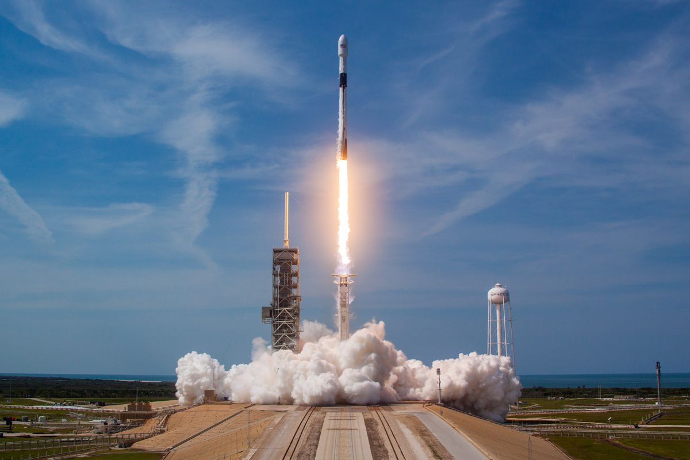
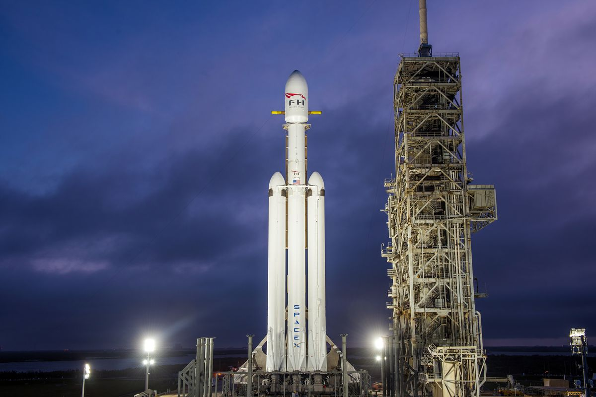
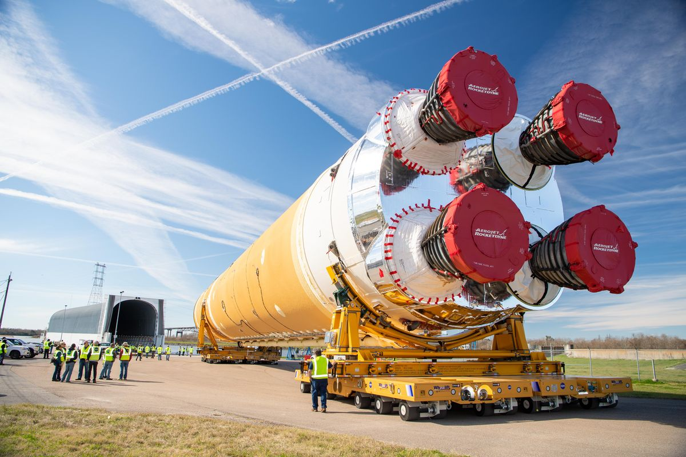
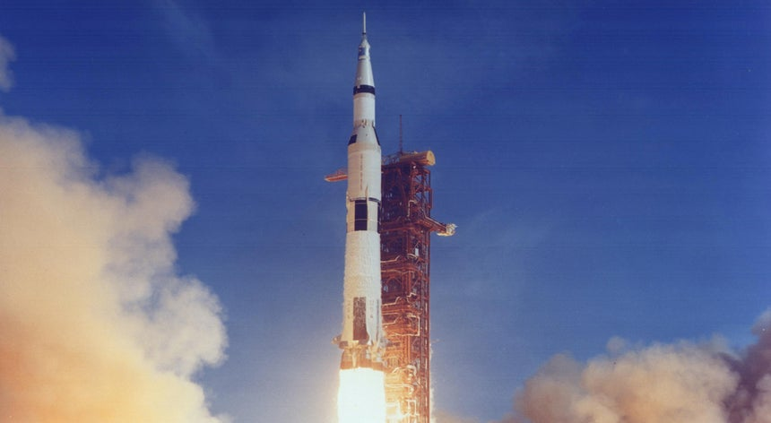

Olá seja bem vindo(a), este é o meu site. O objetivo daescolha deste tema se dá além da falta de inspiração e criatividade, mas também a conscientização sobre o tema espacial que hoje não é muito popular, mas é, e continuará sendo muito importante para o futuro da humanidade.
Por isso decidi trazer uma breve lista sobre os principais foguetes que impulcionam nossa curiosidade e necessidade de exploração:
SPACEX
Falcon 9
O Falcon 9 é um foguete de dois estágios projetado e construído pela SpaceX no Estados Unidos. É movido pelos motores Merlin, também desenvolvidos pela SpaceX, queimando oxigênio líquido (LOX) e querosene refinado (RP-1) como propelentes. Seu nome deriva da composição da famosa Millenium Falcon. Apesar de ser um foguete de uma empresa da iniciativa privada, o Falcon 9 é pioneiro em reutilização do primeiro estágio, o que garante uma economia significativa, possibilitando assim sua ultilização barata.
Falcon Heavy
O Falcon Heavy, é um veículo de lançamento reutilizável de origem estadunidense projetado e produzido pela empresa SpaceX. O Falcon Heavy é o foguete mais poderoso do mundo em operação e o maior desde o Saturn V da NASA. Os dois estágios desse veículo, usam a combinação: LOX e RP-1 como combustível. Também pode ser considerado como um irmão ou primo mais potente do Falcon 9 usado para cargas muito pesadas que o Falcon 9 não pode levar.
NASA
Space Launch System
O Space Launch System, ou simplesmente SLS, (em português Sistema de Lançamento Espacial) é o projeto de um veículo de lançamento descartável de grande porte de origem norte-americana. Ele se seguiu ao cancelamento do Projeto Constellation e deve, entre outras funções, executar algumas atividades antes executadas pelo Ônibus Espacial, que foi retirado de serviço.
Saturno V
O Saturno V também chamado Foguete Lunar (Moon Rocket), foi o foguete usado nas missões Apollo e Skylab. Ele possui três estágios , propelido pelos cinco poderosos motores F-1 do primeiro andar, mais os motores J-2 dos andares seguintes. Os três andares do foguete, usavam oxigénio líquido (lox) como oxidante. O primeiro andar usava RP-1 como combustível, enquanto os segundo e terceiro usavam hidrogénio líquido.
UNITED LAUNCH ALLIANCE
Delta IV

O Delta IV, é um veículo de lançamento descartável de origem Norte americana em atividade. Ele usa motores projetados pela Divisão de Sistemas Integrados de Defesa da Boeing, e construídos na fábrica da United Launch Alliance (ULA) em Decatur, no Alabama. A montagem final é executada pela ULA nas instalações do Centro de lançamento correspondente.